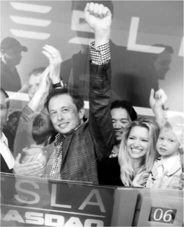
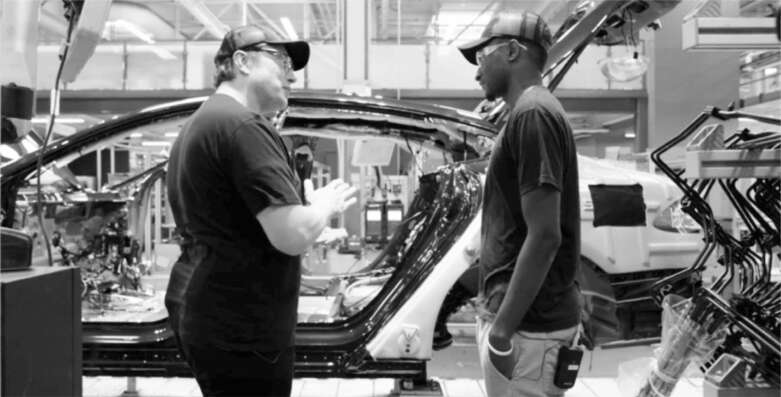

Fremont
Bắt đầu với lý thuyết toàn cầu hóa vào những năm 1980, và bị thúc đẩy không ngừng bởi các CEO cắt giảm chi phí và các nhà đầu tư, các công ty Mỹ đã đóng cửa các nhà máy trong nước và chuyển sản xuất ra nước ngoài. Xu hướng này tăng tốc vào đầu những năm 2000, khi Tesla bắt đầu hoạt động. Từ năm 2000 đến 2010, Hoa Kỳ đã mất một phần ba số việc làm trong lĩnh vực sản xuất. Bằng cách chuyển nhà máy ra nước ngoài, các công ty Mỹ đã tiết kiệm được chi phí lao động, nhưng họ đã mất đi cảm nhận hàng ngày về cách cải tiến sản phẩm.
Musk đã đi ngược lại xu hướng này, phần lớn là do ông muốn kiểm soát chặt chẽ quy trình sản xuất. Ông tin rằng việc thiết kế nhà máy để chế tạo ô tô - "cỗ máy chế tạo cỗ máy" - cũng quan trọng như việc thiết kế chính chiếc xe. Vòng lặp phản hồi thiết kế-sản xuất của Tesla đã mang lại cho hãng lợi thế cạnh tranh, cho phép hãng đổi mới hàng ngày.
Nhà sáng lập Oracle, Larry Ellison, chỉ tham gia hai hội đồng quản trị của công ty, Apple và Tesla, và ông trở thành bạn thân của Jobs và Musk. Ông nói rằng cả hai đều mắc chứng rối loạn ám ảnh cưỡng chế, nhưng theo hướng có lợi. "Rối loạn ám ảnh cưỡng chế là một trong những lý do dẫn đến thành công của họ, bởi vì họ bị ám ảnh bởi việc giải quyết vấn đề cho đến khi họ làm được", ông nói. Điều khiến họ khác biệt là Musk, không giống như Jobs, đã áp dụng sự ám ảnh đó không chỉ vào thiết kế sản phẩm mà còn vào khoa học, kỹ thuật và sản xuất cơ bản. "Steve chỉ cần nắm bắt đúng ý tưởng và phần mềm, còn việc sản xuất được thuê ngoài", Ellison nói. "Elon đảm nhận việc sản xuất, vật liệu, các nhà máy khổng lồ." Jobs thích đi dạo qua xưởng thiết kế của Apple hàng ngày, nhưng ông chưa bao giờ đến thăm các nhà máy của mình ở Trung Quốc. Ngược lại, Musk dành nhiều thời gian đi dọc các dây chuyền lắp ráp hơn là đi quanh xưởng thiết kế. "Áp lực trí não khi thiết kế xe hơi nhỏ hơn rất nhiều so với áp lực trí não khi thiết kế nhà máy", ông nói.
Phương pháp của Musk đã thành hình vào tháng 5 năm 2010, khi Toyota muốn bán nhà máy mà họ từng chia sẻ với GM tại Fremont, California, vùng ven Thung lũng Silicon, cách trụ sở Tesla ở Palo Alto nửa giờ lái xe. Musk đã mời chủ tịch Toyota, Akio Toyoda, đến nhà riêng tại Los Angeles và lái chiếc Roadster chở ông đi dạo. Ông đã mua được nhà máy bị bỏ hoang, từng có giá trị 1 tỷ đô la, với giá 42 triệu đô la. Ngoài ra, Toyota còn đồng ý đầu tư 50 triệu đô la vào Tesla.
Khi thiết kế lại nhà máy, Musk đặt các phòng làm việc của kỹ sư ngay cạnh dây chuyền lắp ráp, để họ có thể thấy đèn nhấp nháy và nghe những lời phàn nàn bất cứ khi nào một yếu tố thiết kế của họ gây ra sự chậm trễ. Musk thường xuyên cùng các kỹ sư đi dọc dây chuyền. Bàn làm việc mở của ông nằm giữa tất cả, không có vách ngăn, và có một chiếc gối bên dưới để ông có thể ngủ lại qua đêm khi muốn.
Một tháng sau khi Tesla mua nhà máy, Musk đã đưa công ty lên sàn chứng khoán, đây là đợt IPO đầu tiên của một nhà sản xuất ô tô Mỹ kể từ Ford vào năm 1956. Ông cùng Talulah và hai con trai đến rung chuông khai trương tại sàn giao dịch chứng khoán NASDAQ ở Quảng trường Thời đại. Vào cuối ngày hôm đó, thị trường chứng khoán giảm, nhưng cổ phiếu của Tesla đã tăng hơn 40%, mang lại 266 triệu đô la tài chính cho công ty. Tối hôm đó, Musk bay về phía tây đến nhà máy Fremont, nơi ông đã nâng ly chúc mừng ngắn gọn. "Đ*ch dầu mỏ", ông nói. Tesla gần như đã chết vào cuối năm 2008. Giờ đây, chỉ mười tám tháng sau, nó đã trở thành công ty mới nổi đình đám nhất nước Mỹ.
Khi những chiếc Model S đầu tiên lăn bánh khỏi dây chuyền lắp ráp Fremont vào tháng 6 năm 2012, hàng trăm người, bao gồm cả thống đốc California Jerry Brown, đã đến tham dự lễ kỷ niệm. Nhiều công nhân vẫy cờ Mỹ. Một số đã khóc. Nhà máy từng phá sản và sa thải toàn bộ công nhân giờ đây đã có hai nghìn nhân viên và đang dẫn đầu con đường hướng tới tương lai xe điện.
Nhưng vài ngày sau, khi Musk nhận được chiếc Model S của riêng mình từ dây chuyền sản xuất, ông không hài lòng. Chính xác hơn, ông tuyên bố rằng nó thật tệ. Ông yêu cầu von Holzhausen đến nhà mình, và họ đã dành hai giờ để kiểm tra chiếc xe. "Chúa ơi, đây có phải là điều tốt nhất chúng ta có thể làm không?", Musk hỏi. "Độ hoàn thiện của các khe hở thật kém. Chất lượng sơn cũng kém. Tại sao chúng ta không đạt được chất lượng sản xuất như Mercedes và BMW?"
Khi Musk tức giận, ông rất nhanh chóng hành động. Ông đã sa thải ba giám đốc chất lượng sản xuất liên tiếp. Vào một ngày tháng 8, von Holzhausen đang ở trên máy bay cùng ông và hỏi làm thế nào để giúp đỡ. Anh ta lẽ ra nên cẩn thận hơn khi đưa ra lời đề nghị như vậy. Musk yêu cầu anh chuyển đến Fremont trong một năm để làm giám đốc chất lượng sản xuất mới.
Von Holzhausen và cấp phó Dave Morris, người đi cùng anh đến Fremont, đôi khi đi bộ dọc theo dây chuyền lắp ráp của nhà máy cho đến hai giờ sáng. Đó là một trải nghiệm thú vị cho một nhà thiết kế. "Nó đã dạy tôi cách tất cả những thứ bạn tạo ra trên bảng vẽ đều có ảnh hưởng ở đầu bên kia, trên dây chuyền lắp ráp", von Holzhausen nói. Musk tham gia cùng họ hai hoặc ba đêm một tuần. Trọng tâm của ông là tìm ra nguyên nhân gốc rễ. Thiết kế nào là nguyên nhân gây ra sự cố trên dây chuyền sản xuất?
Một trong những từ - và cả khái niệm - ưa thích của Musk là "cực hạn". Ông dùng từ này để mô tả văn hóa công sở mà ông mong muốn khi thành lập Zip2, và gần ba mươi năm sau, ông lại dùng nó khi thay đổi hoàn toàn văn hóa dễ dãi tại Twitter. Khi dây chuyền sản xuất Model S tăng tốc, ông đã thể hiện rõ quan điểm của mình trong một email tiêu biểu gửi nhân viên với tiêu đề "Cực hạn tối thượng". Nội dung email như sau: "Hãy chuẩn bị tinh thần cho một cường độ công việc cao hơn bất kỳ điều gì mà hầu hết các bạn từng trải qua. Cách mạng hóa các ngành công nghiệp không dành cho những người yếu tim."
Sự công nhận đến vào cuối năm 2012, khi Tạp chí Motor Trend bình chọn chiếc xe của năm. Tiêu đề: "Tesla Model S, Chiến thắng Đáng Kinh ngạc: Bằng chứng Chắc chắn rằng Nước Mỹ Vẫn Có thể Sản xuất những Sản phẩm (Tuyệt vời)." Bản thân bài đánh giá đã rất ấn tượng, đến mức Musk cũng phải ngạc nhiên. "Nó lái như một chiếc xe thể thao, mạnh mẽ, nhanh nhẹn và phản ứng tức thì. Nhưng nó cũng êm ái như một chiếc Rolls-Royce, có thể chở nhiều đồ như một chiếc Chevy Equinox và tiết kiệm nhiên liệu hơn cả Toyota Prius. À, và nó sẽ lướt đến chỗ nhân viên đỗ xe tại một khách sạn sang trọng như một siêu mẫu sải bước trên sàn catwalk Paris." Bài báo kết thúc bằng việc đề cập đến "bước ngoặt đáng kinh ngạc mà Model S đại diện": đây là lần đầu tiên giải thưởng được trao cho một chiếc xe điện.
Ý tưởng mà Musk đề xuất vào năm 2013 thật táo bạo: xây dựng một nhà máy sản xuất pin khổng lồ ở Mỹ, với sản lượng lớn hơn tất cả các nhà máy pin khác trên thế giới cộng lại. "Đó là một ý tưởng hoàn toàn điên rồ", JB Straubel, chuyên gia về pin và là một trong những người đồng sáng lập Tesla, cho biết. "Nó giống như khoa học viễn tưởng vậy."
Đối với Musk, đó là vấn đề về nguyên tắc cơ bản. Model S đang sử dụng khoảng 10% lượng pin của thế giới. Các mẫu xe mới mà Tesla đang lên kế hoạch - một chiếc SUV có tên Model X và một chiếc sedan thị trường đại chúng sẽ trở thành Model 3 - sẽ cần gấp mười lần số lượng pin. "Vấn đề ban đầu tưởng chừng như không thể vượt qua", Straubel nói, "đã trở thành một cơ hội động não thú vị và táo bạo để nói rằng, 'Chà, đây thực sự là cơ hội để làm điều gì đó độc đáo'."
Có một vấn đề, Straubel nhớ lại. "Chúng tôi không biết cách xây dựng một nhà máy sản xuất pin."
Vì vậy, Musk và Straubel quyết định theo đuổi mối quan hệ đối tác với nhà cung cấp pin của họ, Panasonic. Họ sẽ cùng nhau xây dựng một cơ sở nơi Panasonic sẽ sản xuất các cell pin và sau đó Tesla sẽ biến chúng thành các bộ pin cho ô tô. Nhà máy rộng 10 triệu foot vuông sẽ có giá 5 tỷ đô la, và Panasonic sẽ tài trợ 2 tỷ đô la trong số đó. Nhưng các nhà lãnh đạo hàng đầu của Panasonic đã do dự. Họ chưa bao giờ có kiểu hợp tác như vậy, và Musk (dễ hiểu) không phải là người dễ dàng hợp tác.
Để thúc đẩy Panasonic, Musk và Straubel đã nghĩ ra một màn kịch. Tại một địa điểm gần Reno, Nevada, họ lắp đặt đèn và điều động máy ủi để bắt đầu chuẩn bị xây dựng. Sau đó, Straubel mời đối tác của mình tại Panasonic tham gia cùng ông trên một bục quan sát để xem công việc. Thông điệp rất rõ ràng: Tesla đang tiến hành xây dựng nhà máy. Liệu Panasonic có muốn bị bỏ lại phía sau?
Chiến thuật này đã hiệu quả. Musk và Straubel được mời đến Nhật Bản bởi tân chủ tịch trẻ tuổi của Panasonic, Kazuhiro Tsuga. "Đó là một buổi họp quan trọng, nơi chúng tôi phải khiến ông ấy thực sự cam kết rằng chúng tôi sẽ cùng nhau xây dựng Gigafactory đầy tham vọng", Straubel nói.
Bữa tối diễn ra trang trọng với nhiều món ăn tại một nhà hàng Nhật truyền thống với bàn thấp. Straubel lo lắng về cách Musk sẽ cư xử. “Elon có thể rất khó chịu và nóng nảy trong các cuộc họp, và không ai đoán trước được điều gì,” ông nói. “Nhưng tôi cũng từng thấy anh ấy thay đổi hoàn toàn và đột nhiên trở thành một doanh nhân cực kỳ hiệu quả, lôi cuốn và tinh tế, khi anh ấy cần phải như vậy.” Tại bữa tối với Panasonic, Musk quyến rũ đã xuất hiện. Ông phác thảo tầm nhìn của mình về việc đưa thế giới chuyển sang xe điện và lý do tại sao hai công ty nên hợp tác. “Tôi đã khá bất ngờ và ấn tượng, bởi vì, ồ, đây không giống như Elon thường ngày,” Straubel nói. “Anh ấy là một người khó đoán, và bạn không biết anh ấy sẽ nói hay làm gì. Và rồi, đột nhiên, anh ấy đã làm được tất cả.”
Tại bữa tối, Tsuga đã đồng ý trở thành đối tác nắm giữ 40% cổ phần trong Gigafactory. Khi được hỏi tại sao Panasonic quyết định tham gia thương vụ này, ông trả lời: “Chúng tôi quá bảo thủ. Chúng tôi là một công ty 95 năm tuổi. Chúng tôi phải thay đổi. Chúng tôi phải học hỏi tư duy của Elon.”

Cùng Griffin, Talulah và Xavier ăn mừng lễ rung chuông khai trương NASDAQ, tháng 6 năm 2010

Cùng Marques Brownlee tại nhà máy Tesla Fremont